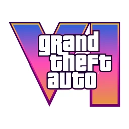

01
Faire tous les sauts acrobatiques
Sur GTA Base, cherche « Sauts », clique « Seule » : les 130 sauts s'affichent. Coche « Trouvé » à chaque saut réussi.
Sauts→Seule→1 / 130

Deux cartes interactives gratuites pour avancer dans GTA 6 (GTA Base, en français, et Map Genie, en anglais), plus la carte officielle de Leonida à imprimer en poster. Le mode d'emploi en français.

Ici, rien à installer : ce sont deux sites web gratuits, faits par des joueurs, qui s'ouvrent dans ton navigateur, sur PC comme sur téléphone, à côté de ta console. Et une carte officielle à télécharger. Où les utiliser :
gtabase.com/fr/gta-6/carte : plus de 5 000 lieux dans 104 catégories, recherche, filtre « Seule » pour une catégorie, case « Trouvé » sur chaque lieu, bouton Objectifs 100 %.
En françaismapgenie.io/grand-theft-auto-6 : lieux, véhicules, collections, mode jour/nuit et cartes de chaleur (heatmaps) des animaux pour la chasse et la pêche. Compte nécessaire pour marquer tes trouvailles.
En anglaisRockstar offre la carte de Leonida en deux fichiers : standard (2805 × 3840 px, 2,10 Mo) et imprimable HD (5775 × 7900 px, 300 ppp, 44,5 Mo), sur le site officiel de GTA VI ou via Xboxygen.
GratuitSur GTA Base, cherche « Sauts », clique « Seule » : les 130 sauts s'affichent. Coche « Trouvé » à chaque saut réussi.
Sur Map Genie, ouvre Heatmaps → Animals - Hunting ou Fishing : la carte de chaleur montre où il vit (ex. la panthère de Leonida).
Le bouton Objectifs 100 % de GTA Base n'affiche que ce qui compte pour la complétion ; active « Masquer les trouvés » pour ne voir que ce qui reste.
Garages à acheter, planques, banques, coffres-forts : filtre la catégorie, puis clique un lieu pour le partager à ton pote.
Télécharge la version imprimable HD (5775 × 7900 px, 300 ppp) et fais-la imprimer en grand format.
Deux cartes de fans très actives, mises à jour chaque jour depuis la sortie du jeu ; gratuites, mais avec publicité et options payantes. Le poster vient de Rockstar.
GTA Base indique une mise à jour le 25 novembre 2026 ; les deux cartes sont complétées chaque jour depuis la sortie du 19 novembre.
Les joueurs proposent des lieux avec une capture (bouton « Suggérer un lieu ») ; GTA Base organise un concours jusqu'au 28 novembre 2026.
Aucun compte obligatoire sur GTA Base ; comptes facultatifs (Discord, Google) et publicité sur les deux sites.
Gratuit, financé par la publicité et par des options payantes (VIP chez GTA Base).
Le jeu est sorti il y a une semaine : certains lieux manquent encore ou peuvent bouger, et des noms restent en anglais.
Comment on note : 5 critères notés sur 5, vérifiés sur les sites de GTA Base, Map Genie et Xboxygen le 26 novembre 2026. La note sur 10 est la moyenne ramenée sur 10.
Bon pour : Tout en français, objectif 100 %
Bon pour : Animaux (heatmaps), véhicules, mode nuit
Bon pour : Reconstruction faite avant la sortie, moins utile aujourd'hui
Bon pour : Poster, vue d'ensemble (sans objets à trouver)

Chaque vidéo RepoPop t'explique un dépôt GitHub utile en moins d'une minute, avec son kit comme celui-ci.